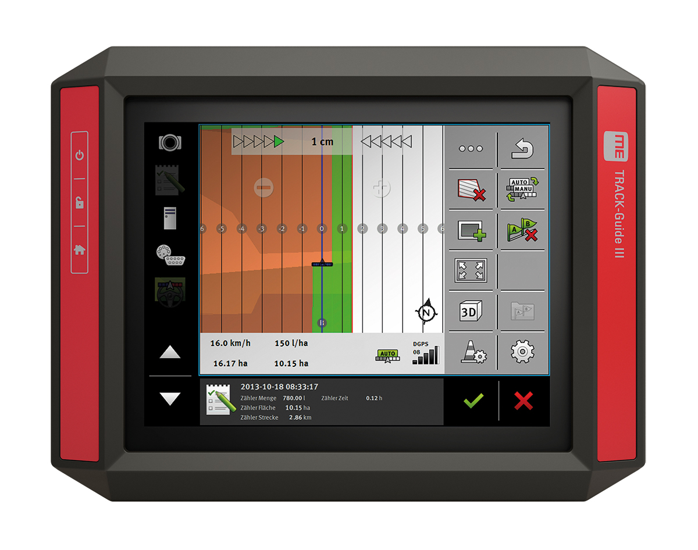
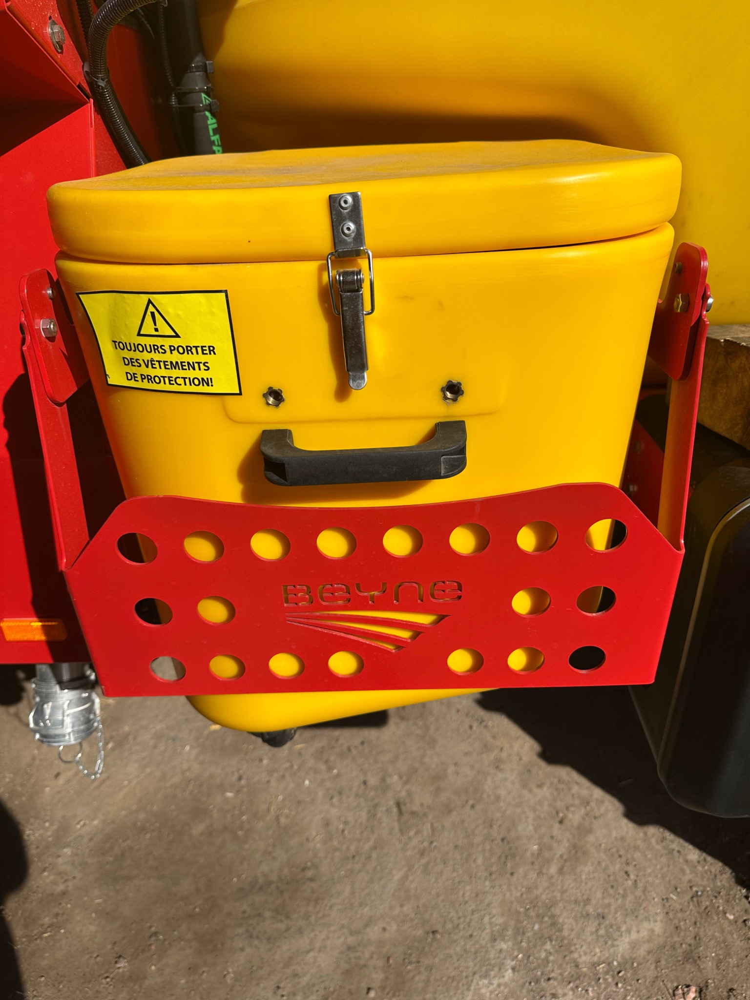

01Commandes
Joystick & commandes
Identifier rapidement les commandes de rampe, direction, pulvérisation et automatismes.
Ouvrir la formation →
Un parcours illustré et progressif pour prendre en main les commandes, le terminal TOUCH 800, la pulvérisation, le rinçage et l’entretien.
Commencez par les six modules essentiels, puis utilisez les tutoriels complémentaires selon votre besoin au chantier.
Identifier rapidement les commandes de rampe, direction, pulvérisation et automatismes.
Ouvrir la formation →
02TerminalPréparer le terminal, les fonctions machine et le guidage avant le travail.
Ouvrir la formation →
03NettoyageRincer correctement la cuve, le circuit et la rampe après pulvérisation.
Ouvrir la formation →Préparer la machine pour l’hiver et protéger les circuits sensibles contre le gel.
Ouvrir la formation → 05Circuit
05CircuitComprendre le cheminement hydraulique et pneumatique du circuit de pulvérisation.
Ouvrir la formation →06ContrôlesEffectuer tous les contrôles machine, automatismes et guidage avant le chantier.
Ouvrir la formation →Retrouvez directement les opérations courantes pour préparer, utiliser et entretenir votre pulvérisateur.